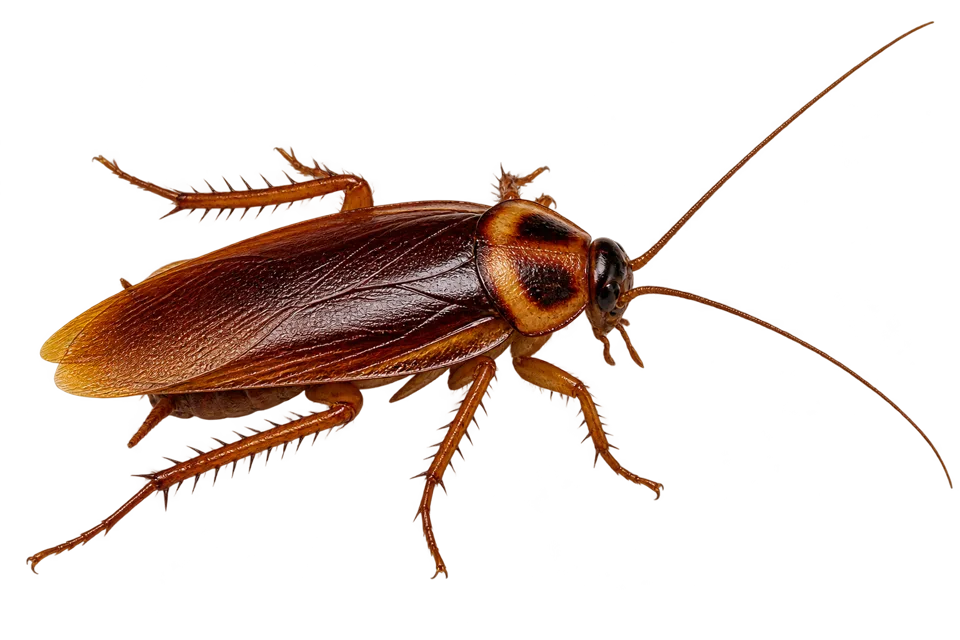
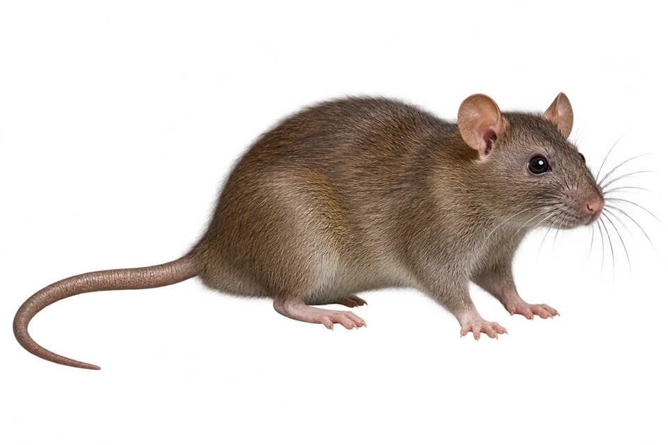
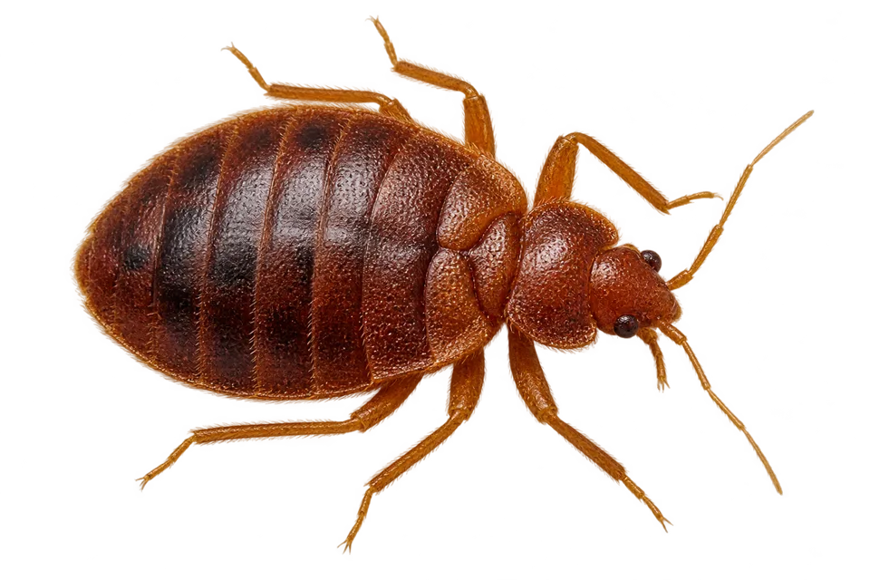

Debug Services · Kampala
Serious pest
control.
Handled properly.
Careful pest treatment for Kampala homes and businesses.
01 — THE PESTS
Pests we handle.
From kitchen cracks to roof spaces, we find where they hide.

01 / KITCHENSCockroachesSeen one after dark? We look for the source.See the approach ↗
02 / ROOF SPACESRats & miceScratching or droppings? We trace their routes.See the approach ↗
03 / BEDROOMSBed bugsMarks near bedding? We inspect their hiding places.See the approach ↗Termites, ants or something else?Explore all pest services ↗
02 — ON THE VISIT
We look where pests live.
The first step is finding the cause, not just the pest you saw.
- 01Inspect
Find activity and entry points.
- 02Treat
Choose the right method for the site.
- 03Prevent
Help keep pests from returning.
03 — OUR STANDARD
Respect for your space.
Safety and integrity guide every visit.
Our team follows clear procedures for conduct, protective equipment and chemical handling.
Our standards ↗04 — RAPID RESPONSE